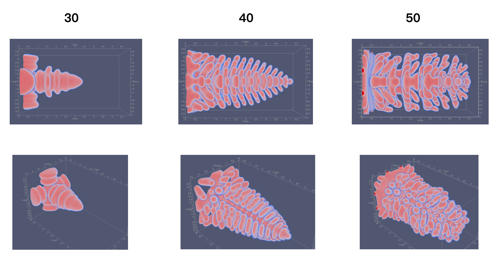
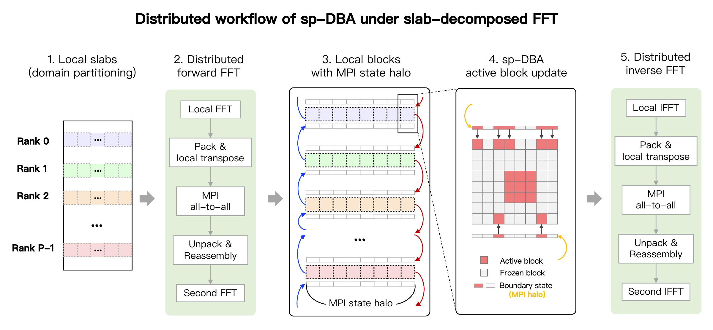
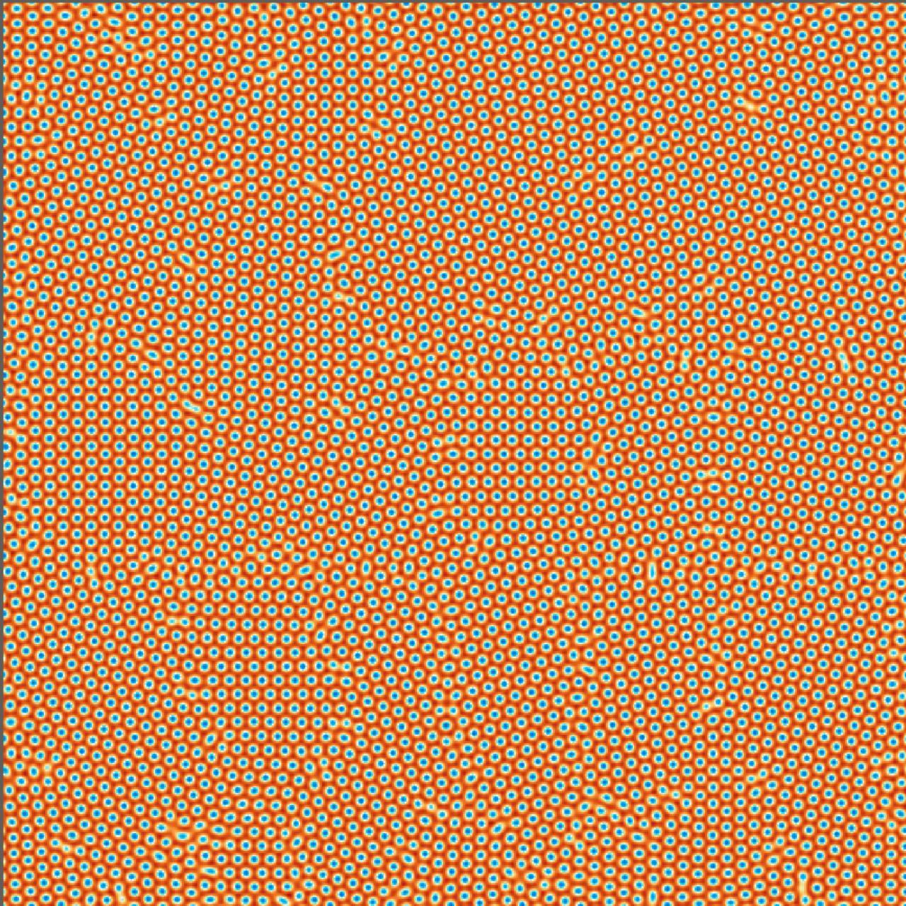
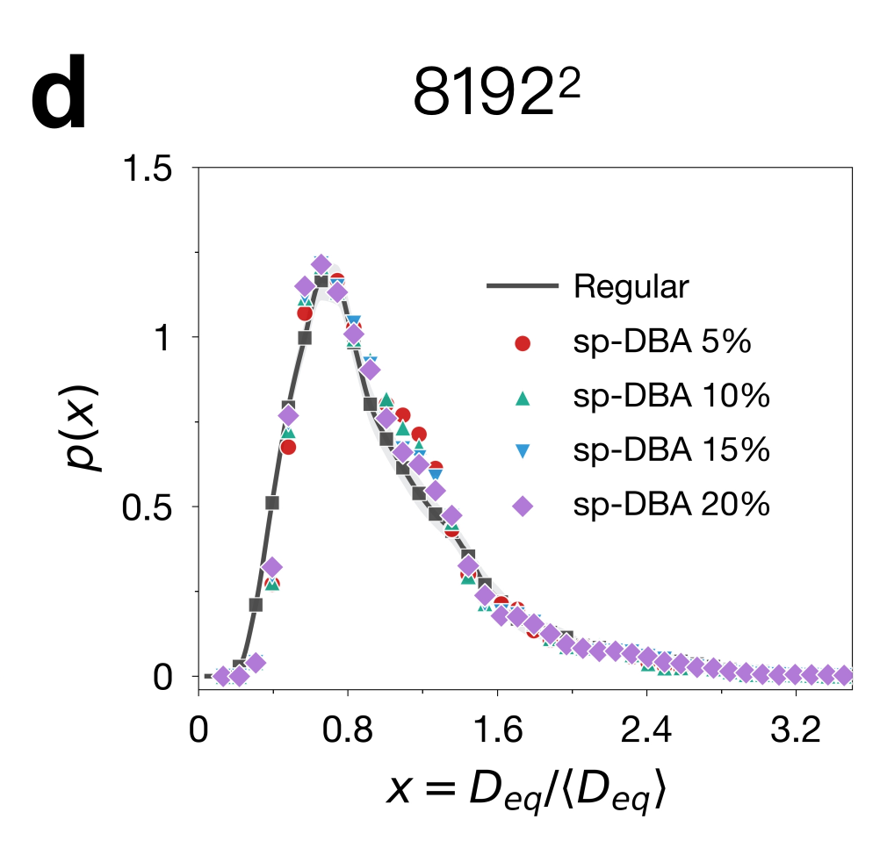

Research notes
Much of this work happened between the first working solver and the current manuscript. These notes follow a few of those steps: building solvers, implementing FFTs, and turning density fields into information about grains and defects.
Building the solvers
I started with coupled phase and temperature fields, then worked with atomic-periodic densities and complex amplitudes. These development views show the checks behind the solvers: how a seed is initialized, which quantities are inspected, and what changes when the model settings change.
PF · Parameters and initialization
A plausible dendrite shape was only a starting point. I varied anisotropy, undercooling, temperature-related parameters, and seed size while inspecting the coupled phase and temperature fields. I also reorganized the finite-difference loops and memory layout before building parallel versions. These snapshots record how the developing morphology responded to those choices.



Seed-size and undercooling comparisons


APFC · Looking beyond density
I initialized differently oriented seeds through the phases of three complex amplitudes. Later versions added a tanh amplitude taper and linked the third amplitude’s initial phase to the first two. I implemented FFTW and CUDA/cuFFT versions, with semi-implicit updates in Fourier space. The two montages compare reconstructed density, combined amplitude, phase, and phase-gradient views for different seed orientations and contacting grains. Comparing these fields helped me inspect initialization beyond the density image. Phase jumps needed care: the displayed phases wrap periodically, and their gradients can contain representation artifacts.


Model background: Athreya et al. (2007) · Berčič & Kugler (2018).
XPFC · Reading the model in both spaces
In XPFC, changing the model changes which lattice spacings the free energy favors. The nonlocal term becomes a multiplication by a correlation kernel in Fourier space. I compared density fields, Fourier-space views, and line cuts for different lattice setups and parameter settings. These paired views helped me inspect the solver’s response to the model. The montage pairs density fields with Fourier-space fields and line cuts, including two-dimensional and projected lattice cases.

I also compared the labeled α settings at several stages of polycrystalline evolution. The paired real-space and Fourier-space views made changes in the developing patterns easier to inspect.

Model background: Greenwood, Rottler & Provatas (2011).
FFT practice
Writing an FFT helped me understand the transform I was using in my solvers. Moving it across GPUs then made memory layout and communication just as important as the arithmetic.
Cooley–Tukey implementation
I wrote a small FFT library around Cooley–Tukey decomposition, working through recursive and iterative versions, bit-reversal indexing, and precomputed twiddle factors. I compared it with FFTW and examined temporary buffers and memory contiguity. The handwritten notes below show part of that process: roots of unity, even–odd decomposition, and how the smaller transforms fit together.

Distributed FFTs
For larger PFC fields, I implemented a slab-decomposed workflow combining local cuFFT transforms with packing, MPI redistribution, and unpacking. This separates the local arithmetic from the data movement needed for a global transform. The workflow below retains the full FFT/IFFT and redistribution stages.


For sp-DBA, I also added exchanges of block-state metadata between neighboring ranks. These small state halos coordinate adaptive updates near slab boundaries; they serve a different purpose from the global redistribution required by the FFT.

From density fields to grain statistics
A PFC simulation gives me a continuous field. To measure grains in a single atomic layer, I need to turn that field into particles, assign in-plane orientations, and group the particles into grains. The same particle dump supports two paths: Python analysis and visual inspection in OVITO.
Inspect the field and extract atoms
I inspect the real-space density field in ParaView. My C++/CUDA routines locate density maxima, turning the periodic field into discrete particle positions while retaining a density value for each peak.
Compute orientations and write a dump
For this monolayer workflow, I calculate in-plane orientation myself from sixfold bond order. I export the positions, density, orientation angle, and a quaternion representing rotation about the layer normal in a LAMMPS-style dump. This supplies the orientation explicitly rather than relying on a bulk three-dimensional structure-identification step.
Segment grains and calculate statistics
My Python code selects grain cores using peak density and local distortion. Region growing joins periodic neighbors within a 3.5° misorientation tolerance, treating angles separated by 60° as equivalent. Neighborhood voting assigns boundary particles, followed by cleanup of small fragments and artifacts. Summing local atomic areas gives grain areas and equivalent diameters; CSV summaries then feed the grain-size distribution plots.
Check the particle view in OVITO
I load the original particle dump in OVITO to inspect positions and the exported orientations. Alongside it, I check the Python segmentation maps and distributions. This lets me examine defects, interfaces, and sensitivity to analysis settings before interpreting a change in grain statistics as physical evolution.
Definitions and analysis protocol: Supplementary Note S3 of our preprint.





Model background: Original PFC formulation · PFC and density-functional theory.